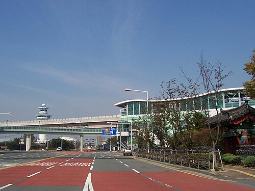
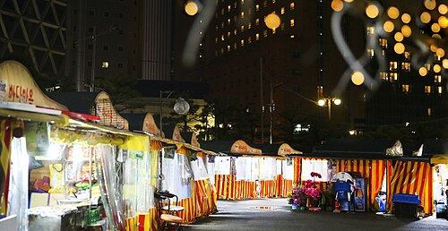
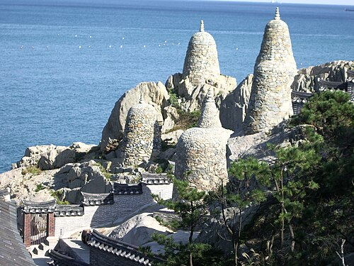
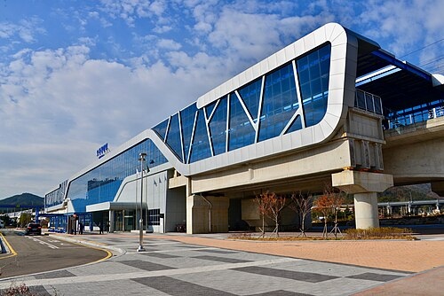
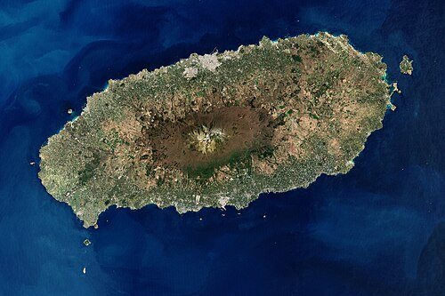

釜山 4 日行 · 流程圖
2026/8/1–8/4 · 5 人無自駕 · 每站含【实景照片】【做什麼】【時間】【交通】
🚕 5人 = 2輛的士 或 Van
住海雲台
UO604 抵達 · 7C501 飛濟州
Day 1 · 8/1 五 抵達 · 巨大豬肉湯飯午餐 · 海雲台
02:35–07:00

📸 金海国际机场 PUS 实景釜山機場
UO 604
UO 604
做什麼：抵達、入境、取行李
停留 ~1–1.5h
→
🚕 的士×2機場→海雲台酒店
約 40–50 分
約 40–50 分
10:00–14:00  📸 海云台一带实景
📸 海云台一带实景
📸 海云台一带实景
海雲台酒店
做什麼：Check-in、淋浴補眠、放行李
停留 ~1–2h
→
🚶 步行酒店→湯飯店
約 5–10 分
約 5–10 分
11:30–13:00

📸 釜山汤饭（示意）巨大豬肉湯飯 🍲
거대돼지국밥
거대돼지국밥
做什麼：豬肉湯飯 ₩13,000 / 水拌麵 ₩11,000
中洞1150-13 · 09:00–21:00
中洞1150-13 · 09:00–21:00
停留 ~1–1.5h
📍 地圖
→
🚶 步行→海雲台海灘
約 10–15 分
約 10–15 分
→
🚶 步行海灘周邊
約 5 分
約 5 分
18:00 後
📸 海云台夜市小吃实景
海雲台晚餐
做什麼：미포집豬腳 / 母牛排骨 / 密陽湯飯
輕鬆收尾、早睡
Day 2 · 8/2 六 西線：甘川 → 扎嘎其 → 松島 → 白淺灘
08:30 出發
📸 海云台酒店周边实景
📸 海云台酒店周边实景
海雲台酒店
做什麼：早餐後出發
—
→
🚕 的士×2海雲台→甘川洞
約 35–45 分
約 35–45 分
→
🚕 的士×2甘川→扎嘎其
約 15–20 分
約 15–20 分
→
🚕 的士×2扎嘎其→松島
約 15–20 分
約 15–20 分
→
🚕 的士×2松島→白淺灘
約 20–25 分
約 20–25 分
→
🚕 的士×2白淺灘→海雲台
約 25–35 分
約 25–35 分
19:30 後
📸 海云台海水浴场实景
回海雲台
做什麼：가야밀면拌麵 / 미포집豬腳 晚餐
回酒店休息
Day 3 · 8/3 日 Greetvi → 滑車 → 踏石觀景台 → 小镰倉 → 膠囊 → 購物
08:00 出發
📸 海云台出发实景
📸 海云台出发实景
海雲台酒店
做什麼：早餐、退房行李放酒店或帶上車
—
→
🚕 的士×2海雲台→Greetvi
約 50–60 分
約 50–60 分
10:00–12:30

📸 机张东海岸·海东龙宫寺（Greetvi 同线海景）Greetvi 西生店
그릿비 서생점
그릿비 서생점
做什麼：海景咖啡、現烤麵包早午餐、拍照（10:00開門）
停留 2.5h
📍 地圖
→
🚕 的士×2Greetvi→Luge
約 15–25 分
約 15–25 分
13:00–16:00

📸 Osiria 站·Skyline Luge 机张园区Skyline Luge
스카이라인루지·機張
스카이라인루지·機張
做什麼：纜車上山 + 斜坡滑車 2–3 圈（親子/刺激）
停留 2–3h
📍 地圖
→
🚕 的士×2Luge→踏石觀景台
約 35–45 分
約 35–45 分

→
🚶 步行觀景台→道口
沿海岸約 10–15 分
沿海岸約 10–15 分
→
🚶 步行道口→膠囊站
約 3–5 分
約 3–5 分
→
🚶 步行尾浦→LCT
Olive Young 約5分
Olive Young 約5分
18:30–20:30
📸 海云台商圈
Olive Young + 樂天超市
올리브영 LCT · 롯데마트 부암
올리브영 LCT · 롯데마트 부암
做什麼：① Olive Young LCT（10:00–22:30）美妝伴手禮 ② 地鐵2號線→樂天超市 Buam（10:00–23:00）零食/日用品 · 可順路羅德罗街
停留 ~2h
📍 Olive Young
🛒 樂天超市
→
🚇 地鐵2號線釜站→海雲台
回酒店 約15分
回酒店 約15分
21:00 後
📸 回酒店
📸 回酒店
海雲台酒店
做什麼：整理行李、早休息（明天 05:30 起床）
—
Day 4 · 8/4 一 飛濟州（不排景點）
05:30
📸 海云台酒店实景
📸 海云台酒店实景
海雲台酒店
做什麼：退房、檢查護照機票
—
→
🚕 06:00出發2輛的士
約 45–55 分
約 45–55 分
→
✈️ 7C 50108:00 起飛
釜山→濟州
釜山→濟州
08:00

📸 济州岛实景濟州島
做什麼：抵達濟州、開始濟州行程
約 09:05 抵達